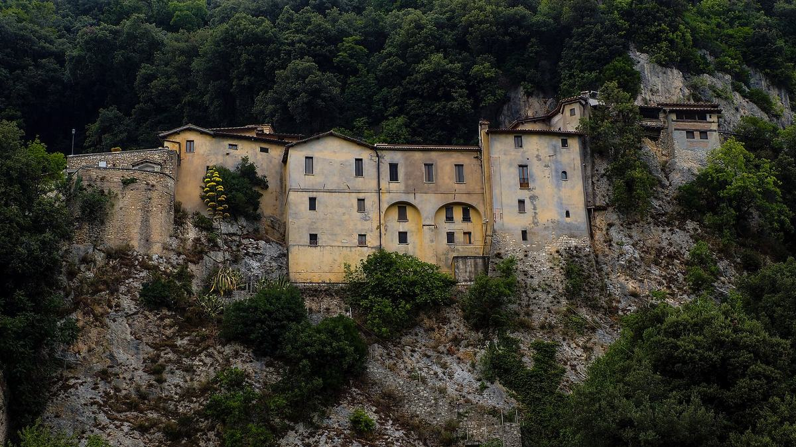
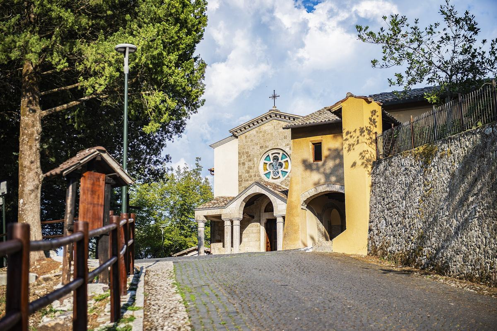
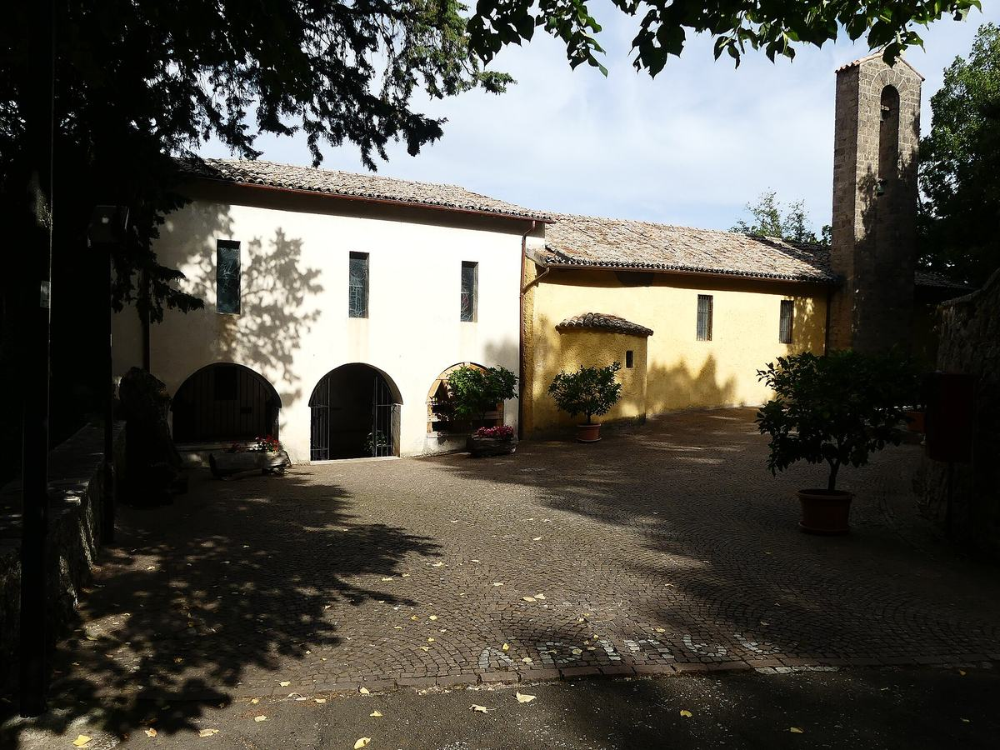
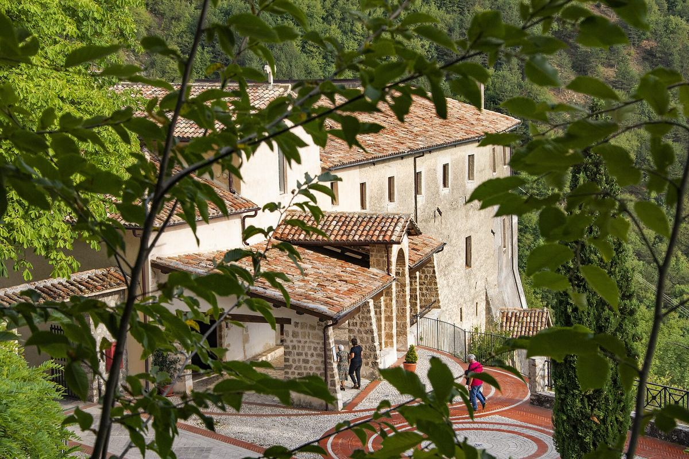

La Valle Santa a tavola
800 anni dalla morte di San Francesco: quattro santuari, quattro piatti, una valle.
1226 · 2026
Intorno a Rieti si apre la Valle Santa: una conca verde chiusa dai monti, dove San Francesco tornò più volte e dove ancora oggi quattro santuari ne custodiscono la memoria. A Greccio nacque il primo presepe, a Fonte Colombo prese forma la Regola dei frati, a La Foresta la vigna di un povero sacerdote diede più vino che mai, a Poggio Bustone Francesco salutò gli abitanti con un “Buongiorno, buona gente”.
Per gli 800 anni dalla sua morte, gli allievi dell'Istituto Alberghiero “Costaggini” raccontano la valle a modo loro: per ogni santuario, un episodio delle fonti francescane e un piatto che a quell'episodio si ispira. Non sono le ricette di Francesco, che nessuno scrisse mai: sono un omaggio, con i prodotti di questa terra.
«Altissimu, onnipotente, bon Signore, tue so' le laude, la gloria e l'honore et onne benedictione.»San Francesco d'Assisi, Cantico delle Creature
I quattro santuari della valle
Tutti a meno di mezz'ora d'auto da Rieti. Le distanze sono indicative.
Tocca un segnaposto per il nome del luogo e le indicazioni stradali. Mappa © OpenStreetMap e CARTO.


I · Greccio
Il primo presepe
Santuario del Presepe · circa 15 km da Rieti
«Laudato si', mi' Signore, per sora Luna e le stelle: in celu l'ài formate clarite et pretiose et belle.»
Nella notte di Natale del 1223, in una grotta sopra Greccio, Francesco volle “vedere con gli occhi del corpo” la povertà di Betlemme: una mangiatoia con il fieno, il bue e l'asinello, la gente del paese con fiaccole e candele. Nacque così il primo presepe della storia.
Tommaso da Celano, Vita prima, cap. XXX (Fonti Francescane 466–470)
Patate cotte nel fieno
Il fieno della mangiatoia diventa ingrediente: una cottura antica dei contadini di montagna, che profuma le patate di prato d'estate.
Ingredienti (4 persone)
- 800 g di patate a pasta gialla, piccole e con la buccia
- 2 manciate di fieno alimentare (non trattato)
- sale grosso, olio extravergine della Sabina DOP, timo
Preparazione
- Lavare il fieno e lasciarlo in ammollo 10 minuti.
- Disporre metà del fieno in una pentola, adagiare le patate, coprire con il resto del fieno e qualche grano di sale grosso.
- Coprire d'acqua, chiudere con il coperchio e cuocere a fuoco dolce per circa 40 minuti.
- Scolare, eliminare il fieno e servire con un filo d'olio e timo fresco.


II · Fonte Colombo
Il “Sinai francescano”
Santuario di Fonte Colombo · circa 5 km da Rieti
«Laudato si', mi' Signore, per sor'Aqua, la quale è multo utile et humile et pretiosa et casta.»
Tra i lecci di Monte Rainero, nel 1223, Francesco si ritirò in digiuno e preghiera e dettò la Regola definitiva dei frati, approvata da papa Onorio III il 29 novembre dello stesso anno. Una vita semplice, essenziale, come il cibo dei frati.
Tradizione del santuario; Regola bollata, approvata con la bolla “Solet annuere” (29 novembre 1223)
Minestra di farro e lenticchie di Rascino
La sobrietà dell'eremo in un piatto della montagna reatina: le piccole lenticchie dell'altopiano di Rascino e il farro, cibo antico e povero.
Ingredienti (4 persone)
- 200 g di lenticchie di Rascino
- 150 g di farro perlato
- 1 cipolla, 1 carota, 1 costa di sedano, 1 spicchio d'aglio, 1 foglia d'alloro
- olio extravergine della Sabina DOP, sale, pepe
Preparazione
- Sciacquare lenticchie e farro.
- Rosolare dolcemente il trito di cipolla, carota e sedano con l'aglio in tre cucchiai d'olio.
- Unire lenticchie, farro e alloro, coprire con 1,5 litri d'acqua calda e cuocere per circa 40 minuti, salando a fine cottura.
- Servire con olio a crudo e una macinata di pepe.


III · La Foresta
La vigna del sacerdote
Santuario di Santa Maria della Foresta · circa 5 km da Rieti
«Laudato si', mi' Signore, per sora nostra matre terra, la quale ne sustenta et governa, et produce diversi fructi con coloriti flori et herba.»
Francesco, malato agli occhi, si fermò presso la chiesa di San Fabiano, fuori Rieti. La gente accorse a vederlo e la vigna del povero sacerdote fu spogliata dei grappoli. Francesco lo rassicurò: quell'anno il vino fu più abbondante che mai.
Fioretti di San Francesco, cap. XIX (Fonti Francescane 1849–1850)
Ciambelline al vino
Il vino della vigna di San Fabiano in un dolce semplice della tradizione laziale e sabina, da “inzuppare” nel vino stesso.
Ingredienti (circa 30 ciambelline)
- 500 g di farina 00
- 150 g di zucchero, più quello per la copertura
- 125 ml di vino (rosso o bianco)
- 125 ml di olio extravergine d'oliva
- un cucchiaino di semi di anice (facoltativo), un pizzico di sale, mezza bustina di lievito per dolci
Preparazione
- Mescolare vino, olio e zucchero; aggiungere poco per volta la farina con il lievito, il sale e l'anice fino a ottenere un impasto morbido e liscio.
- Formare dei cordoncini lunghi circa 12 cm, chiuderli ad anello e passarne un lato nello zucchero.
- Cuocere in forno statico a 180 °C per 20–25 minuti, finché sono dorate.


IV · Poggio Bustone
“Buongiorno, buona gente”
Santuario di San Giacomo · circa 17 km da Rieti
«Laudato sie, mi' Signore, cum tucte le tue creature, spetialmente messor lo frate Sole, lo qual è iorno, et allumini noi per lui.»
Arrivando a Poggio Bustone, Francesco salutò gli abitanti con un “Buongiorno, buona gente!”. La porta del paese si chiama ancora Porta del Buongiorno.
Tradizione locale di Poggio Bustone
Bruschetta con l'olio nuovo della Sabina
Il gesto più semplice dell'accoglienza: pane e olio, offerti a chi arriva. L'olio della Sabina è stato tra i primi extravergini italiani a ottenere la DOP.
Ingredienti (4 persone)
- 4 fette spesse di pane casereccio
- olio extravergine nuovo della Sabina DOP
- 1 spicchio d'aglio, sale in fiocchi
Preparazione
- Tostare il pane sulla brace o su una piastra ben calda.
- Strofinare appena l'aglio sul pane ancora caldo.
- Condire con abbondante olio nuovo e un pizzico di sale.
E per finire
Il dolce di frate Jacopa
Negli ultimi giorni di vita, Francesco chiese di avere accanto i frati e la nobildonna romana Jacopa de' Settesoli, che lui chiamava “frate Jacopa”, e il dolce di mandorle e miele che lei gli preparava. Jacopa arrivò in tempo, con quel dolce: la tradizione lo identifica con i mostaccioli, che ancora oggi si preparano per la festa del 4 ottobre.
Specchio di perfezione, cap. 112; Compilatio Assisiensis (Leggenda perugina), cap. 8 (Fonti Francescane 1554)
Mostaccioli di San Francesco
Ingredienti (circa 25 mostaccioli)
- 250 g di farina
- 150 g di mandorle tostate e tritate grossolanamente
- 120 g di miele
- 80 ml di mosto cotto (o vino cotto)
- un cucchiaino di cannella, la scorza grattugiata di un'arancia, mezzo cucchiaino di bicarbonato
Preparazione
- Scaldare appena miele e mosto cotto, senza farli bollire.
- In una ciotola unire farina, mandorle, cannella, scorza d'arancia e bicarbonato; versare il miele tiepido e impastare.
- Stendere l'impasto a un centimetro di spessore e tagliare dei rombi.
- Cuocere a 170 °C per 15–18 minuti: devono restare morbidi all'interno.
Pace e bene
Il saluto di FrancescoFonti e crediti
- Episodi tratti dalle Fonti Francescane (Tommaso da Celano, Vita prima; Fioretti di San Francesco; Specchio di perfezione; Compilatio Assisiensis) e dalla tradizione dei santuari della Valle Santa. Le ricette sono ispirate agli episodi: non sono ricette di San Francesco.
- Foto dei santuari da Wikimedia Commons, con licenza CC BY-SA 4.0: Greccio di 66colpi; Fonte Colombo di MonDoMD; La Foresta di Marco Guadagnoli; Poggio Bustone di Monica Domeniconi.
- Il Cantico delle Creature è citato nella forma del manoscritto di Assisi; i versi abbinati ai santuari sono una scelta della redazione.